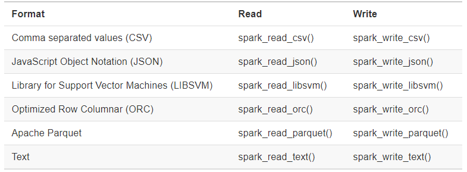

Chapter 5 R y Spark
5.1 Introducción
En este capítulo emplearemos Spark junto con R para el procesamiento de datos. Spark es un framework que permite realizar procesos de división y paralelismo en un equipo o múltiples equipos.
5.1.1 Hadoop
Google (2004) publicó un nuevo documento que describe cómo realizar operaciones en todo el Sistema de archivos de Google, un enfoque que se conoció como MapReduce. Como era de esperar, hay dos operaciones en MapReduce: map y reduce. La operación de map proporciona una forma arbitraria de transformar cada archivo en un nuevo archivo, mientras que la operación de reduce combina dos archivos. Ambas operaciones requieren un código de computadora personalizado, pero el marco MapReduce se encarga de ejecutarlas automáticamente en muchas computadoras a la vez. Estas dos operaciones son suficientes para procesar todos los datos disponibles en la web, al tiempo que proporcionan suficiente flexibilidad para extraer información significativa de la misma.
5.1.2 Spark
En 2009, Apache Spark comenzó como un proyecto de investigación en AMPLab de UC Berkeley para mejorar MapReduce. Específicamente, Spark proporcionó un conjunto más rico de verbos más allá de MapReduce para facilitar la optimización del código que se ejecuta en múltiples máquinas. Spark también cargó datos en la memoria, lo que hace que las operaciones sean mucho más rápidas que el almacenamiento en disco de Hadoop

Spark
Componetes:
- Spark Core: Base donde se apoya el resto de los componentes
- Spark SQL: Procesamiento de dato estructurados y no estructurados
- Spark streaming: Procesamiento de datos en tiempo real.
- Spark MLLib: Machine learning
- Spark graph: Procesamiento de grafos
Algunos conceptos importantes
HDFS: Sistema de ficheros
5.1.3 Sparklyr
Oficialmente, sparklyr es una interfaz R para Apache Spark. Está disponible en CRAN y funciona como cualquier otro paquete de CRAN, lo que significa que es independiente de las versiones de Spark, es fácil de instalar, sirve a la comunidad R, abarca otros paquetes y prácticas de la comunidad R, y así sucesivamente. Está alojado en GitHub y tiene licencia de Apache 2.0, que le permite clonar, modificar y contribuir de nuevo a este proyecto.
5.2 Arrancando Spark
5.2.2 Instalación
5.2.3 Creando una sesión en Spark
#inicia la sesión
sc <- spark_connect(master = "local", version = "2.4.3")
spark_disconnect(sc)
#configuración
conf <- spark_config()
conf$`sparklyr.shell.driver-memory` <- "2G"
conf$spark.memory.fraction <- 0.8
#spark_home="C:\\Users\\ALVARO\\AppData\\Local\\spark\\spark-2.4.3-bin-hadoop2.7"
#conf$sparklyr.gateway.port <- 9090
#conección
sc <- spark_connect(master = "local", version = "2.4.3",config = conf)
#apagar conexión
spark_disconnect(sc)
spark_disconnect_all()5.2.4 Interface web
Jobs
Stages
Storage
Environment
Executors
SQL
5.3 Análisis con Spark

Pasos en el análisis de datos
5.3.1 Importando los datos
Por lo general, importar significa que R leerá los archivos y los cargará en la memoria; cuando se usa Spark, los datos se importan a Spark, no a R.


Colección de documentos
#csv/importaciones
sp_importaciones<-spark_read_csv(sc,
name="importaciones",
path = "C:\\Users\\ALVARO\\Desktop\\db_bolivia\\importaciones\\importaciones_csv")
###########
#esquema
###########
top_rows <- read.csv("C:\\Users\\ALVARO\\Desktop\\db_bolivia\\importaciones\\importaciones_csv\\1993.csv",sep=",", nrows = 5)
spec_with_r <- sapply(top_rows, class)
spec_with_r[6]<-"factor"
sp_importaciones2<-spark_read_csv(sc,
name="importaciones2",
path = "C:\\Users\\ALVARO\\Desktop\\db_bolivia\\importaciones\\importaciones_csv",
columns = spec_with_r)
# memoria
object.size(sp_importaciones)Comando copy_to
m1<-data.frame(matrix(rnorm(10^7),ncol=20))
object.size(m1)/(10^6)
sp_m1<-copy_to(sc,m1)
rm(m1)
load("C:\\Users\\ALVARO\\Documents\\GitHub\\EST-383\\data\\oct20.RData")
object.size(computo)/10^6
sp_computo<-copy_to(sc,computo)
rm(computo)Documento específico
5.3.2 Librería DPLYR (Gramática de manipulación de datos)
Eliminar un objeto en spark
load("C:\\Users\\ALVARO\\Documents\\GitHub\\EST-383\\data\\oct20.RData")
head(computo)
#filtrado
aux<-computo[computo$País=="Bolivia",] #en R
aux2<-computo %>% filter(País=="Bolivia") #spark SQL
library(DBI)
top10 <- dbGetQuery(sc, "Select * from importaciones limit 10")
top10
library(dplyr)
sp_importaciones %>% tally
sp_covid2 %>% tally
oct20 %>% tally
covid_cache <- sp_covid2 %>%
compute("covid_ch")
covid_cache %>% tally#importaciones
dimnames(sp_importaciones)
sp_t1<-sp_importaciones %>% count(GESTION) %>% compute("t1")
aa<-sp_importaciones %>% count(GESTION) %>% collect()
aa<-sp_importaciones %>% count(GESTION,DESDEPTO) %>% collect()
sp_covid2 %>% count(SEXO,NEUMONIA)
sp_covid2 %>% group_by(SEXO) %>% summarise(mean(EDAD),na.rm=T)
ww<-sp_importaciones %>% group_by(GESTION,DESDEPTO,NANDINA) %>% summarise(total=sum(FOB,na.rm=T)) %>% collect()
sp_importaciones %>% tbl(GESTION)
oct20 %>% select(MAS__IPSP,CC)%>% summarise_all(mean)
oct20 %>% select(MAS__IPSP,CC)%>% summarise_all(mean) %>% show_query()
oct20 %>% summarise(qq=quantile(CC,probs=0.5))
oct20 %>% select(MAS__IPSP,CC) %>% ml_corr()
#figuras
oct20 %>% select(CC) %>% hist()
library(dbplot)
oct20 %>% dbplot_histogram(CC,binwidth = 3)
sp_importaciones %>% dbplot_bar(GESTION)
oct20 %>% dbplot_raster(CC,MAS__IPSP)
oct20 %>% filter(PaAs=="Bolivia")%>% group_by(Departamento) %>% summarise(voto=mean(CC)) %>% ggplot(aes(Departamento,voto))+geom_bar(stat="identity")
ggplot(oct20,aes(CC,MAS__IPSP))+geom_point()Allaire, JJ, Yihui Xie, Jonathan McPherson, Javier Luraschi, Kevin Ushey, Aron Atkins, Hadley Wickham, Joe Cheng, Winston Chang, and Richard Iannone. 2020. Rmarkdown: Dynamic Documents for R. https://CRAN.R-project.org/package=rmarkdown.
R Core Team. 2019. R: A Language and Environment for Statistical Computing. Vienna, Austria: R Foundation for Statistical Computing. https://www.R-project.org/.
Xie, Yihui. 2019. Knitr: A General-Purpose Package for Dynamic Report Generation in R. https://CRAN.R-project.org/package=knitr.
———. 2020. Bookdown: Authoring Books and Technical Documents with R Markdown. https://CRAN.R-project.org/package=bookdown.
Xie, Yihui, J. J. Allaire, and Garrett Grolemund. 2018. “How to Read This Book.” Transforming Climate Finance and Green Investment with Blockchains, 1. https://doi.org/10.1016/b978-0-12-814447-3.00041-0.